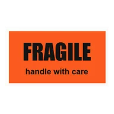

NIGHT
STOCKTAKE
До четырёх ночных работников. Одна норма. Гипермаркет, который перестраивается, стоит только отвернуться, - и то, что на полках, смотрит в ответ.

Трейлер

Смена

Приложи бейдж
Купите карты покупателя, украсьте шкафчик, отметьтесь все вместе. Комната отдыха - единственное безопасное место в здании.

Сканируй, неси, сдавай
Сканируйте товар, толкайте тележки, тащите холодильник вдвоём с другом. Каждый товар, дошедший до терминала, идёт в норму.

Уйди в шесть
Выполните норму и отметьте уход, пока магазин не проголодался. Провалите дважды - и уволят всю бригаду.

Особенности

Магазин движетсяСвет мигает, стеллажи переставляются, целые отделы меняются местами - но только пока на них никто не смотрит. Настоящая физикаШаткие тележки, падающий товар, холодильник на двоих - и один из них рулит вслепую.
Настоящая физикаШаткие тележки, падающий товар, холодильник на двоих - и один из них рулит вслепую. Шесть угрозКаждая охотится на шум по-своему. Они просыпаются одна за другой по ходу ночи.
Шесть угрозКаждая охотится на шум по-своему. Они просыпаются одна за другой по ходу ночи. Схема, которая врётКарта на планшете - это снимок. Чем дольше ей веришь, тем сильнее она врёт.
Схема, которая врётКарта на планшете - это снимок. Чем дольше ей веришь, тем сильнее она врёт. 85 наклеекДостижения - это наклейки для бейджа и коробки на голове, от обычных до ЛЕГЕН...ДАРНЫХ.
85 наклеекДостижения - это наклейки для бейджа и коробки на голове, от обычных до ЛЕГЕН...ДАРНЫХ. Будь коробкойМеняй головы (стопка пицц, старый телик, ведро попкорна), шапки, обувь, лица и скины сканера.
Будь коробкойМеняй головы (стопка пицц, старый телик, ведро попкорна), шапки, обувь, лица и скины сканера. Платят за точностьЗарплата зависит от честного пересчёта. Переклеишь ценник - магазин узнает.
Платят за точностьЗарплата зависит от честного пересчёта. Переклеишь ценник - магазин узнает. Твой шкафчикПокрась его, обклей наклейками, дай бригаде заглянуть в твой альбом наклеек.
Твой шкафчикПокрась его, обклей наклейками, дай бригаде заглянуть в твой альбом наклеек.Не вступать в контакт
В ночную смену с вами работают ещё шестеро. Узнайте, что слышит каждый из них - и что их останавливает.


Скриншоты


Стримьте. Монетизируйте.
- Вы можете стримить, записывать и монетизировать видео по Night Stocktake на любой платформе.
- Разрешение не нужно - но ссылка на игру в описании будет приятна.
- Музыка и звуки игры не зарегистрированы в Content ID.
- Ключевой арт, логотипы, скриншоты и факт-лист - в пресс-ките.
ДИРЕКЦИЯ МАГАЗИНА
Вопросы и ответы
Сколько игроков?
От 1 до 4 в онлайн-кооперативе. Можно и в одиночку, но тащить холодильник одному медленно и громко.
Платформы и дата выхода?
ПК (Steam). Дату выхода и цену объявим в Steam и в нашем Discord - добавьте игру в желаемое, чтобы не пропустить.
Есть голосовой чат?
Голосовой чат с учётом расстояния планируется к релизу в Steam. А пока пользуйтесь любимым голосовым приложением.
Насколько страшно?
Больше ползучего ужаса, чем крови: мигающий свет, вещи, которые двигаются, стоит отвернуться, внезапные громкие звуки. В игре есть предупреждение о фоточувствительности и настройки для уменьшения мерцания.
Можно стримить?
Да, и монетизировать тоже можно. Подробнее: правила для авторов.
Языки?
Английский, упрощённый китайский, русский, бразильский португальский, испанский и немецкий: меню, интерфейс и субтитры.
Вступай в ночную бригаду
Новости, плейтесты, баг-репорты и чужие альбомы наклеек.